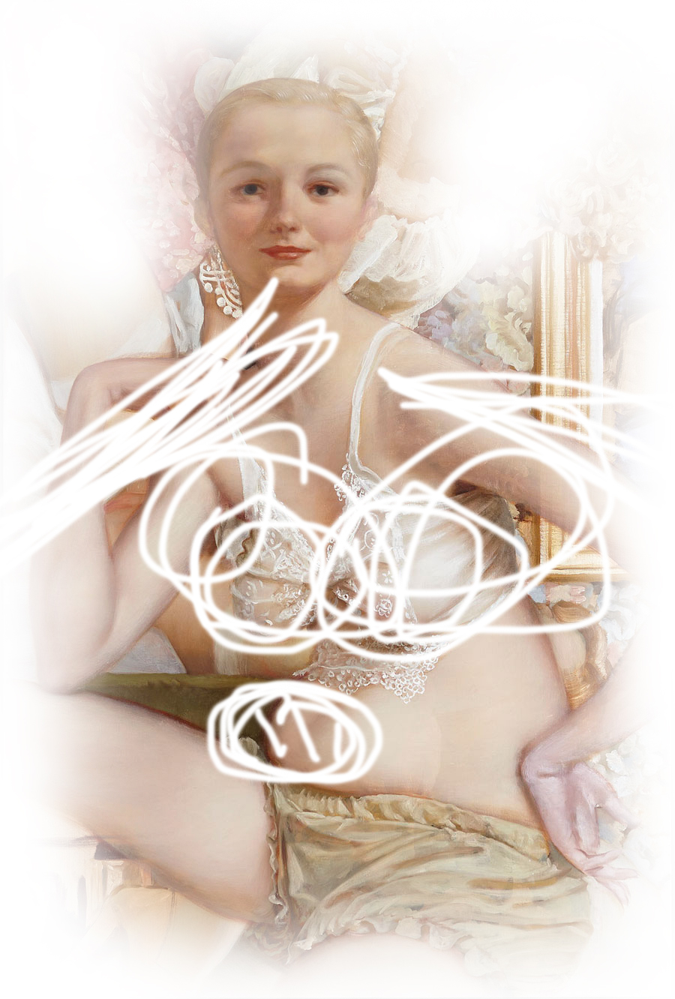
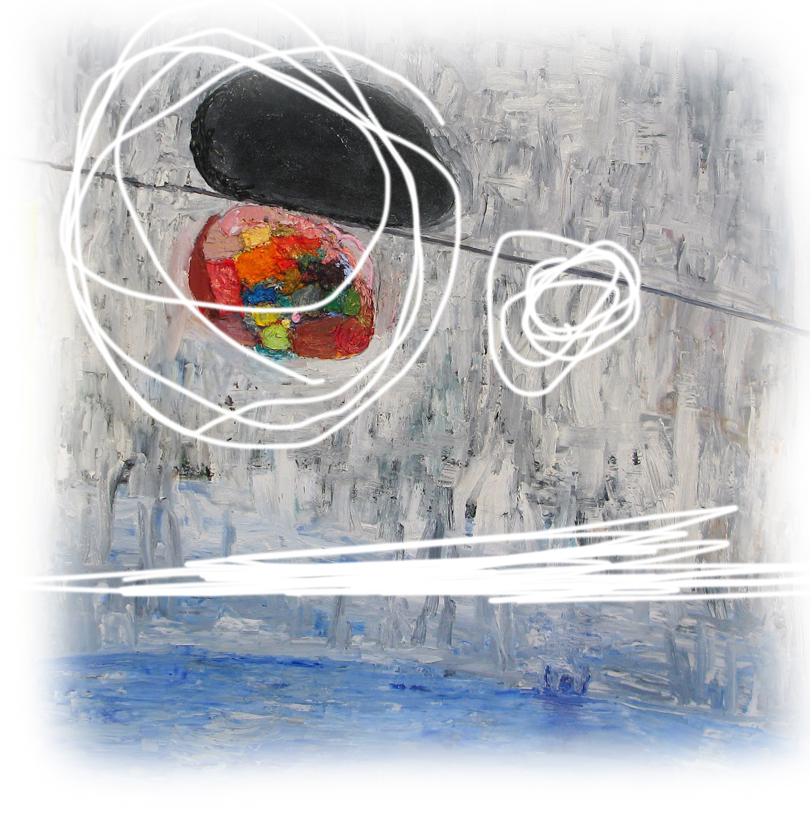
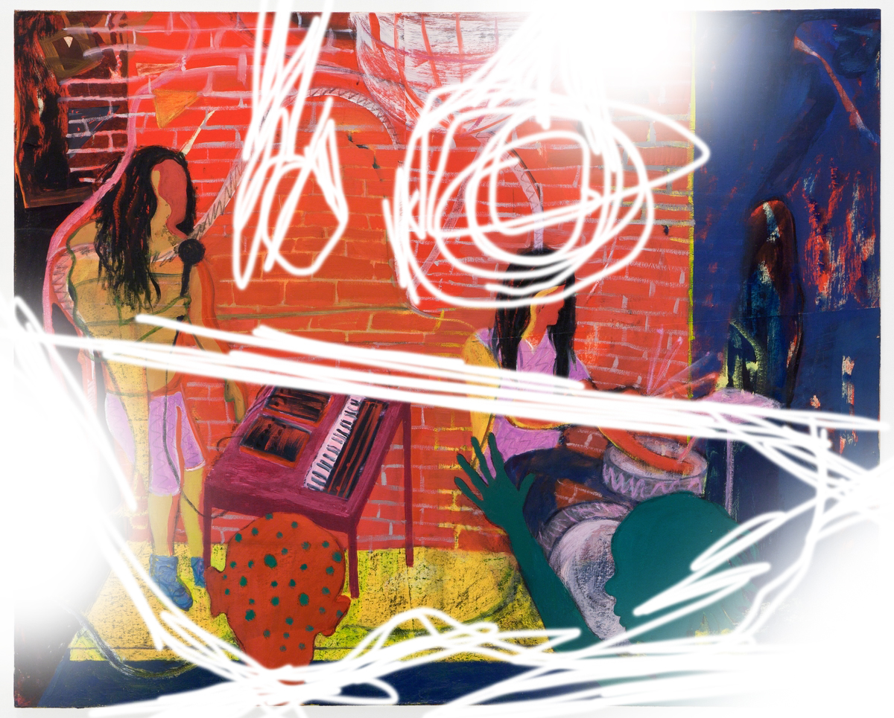

We Speak a Language
Not all of us speak your same language, so we are considered different. The truth is we are different. Art is different. We remember our ancestors who used to be primarily representational; snapshots of what your lives were and will be. We essentially acted as your mirrors. We captured your ideal self. We represented your self worth and your riches.
We did speak in the past, but not as much about what we speak about today. Some of us try to remind you of those times, but not nearly as many. We speak a language, but we need you to translate it.
We Welcome You to Understand
We understand that there may be a disconnect between us and yourselves, however that does not mean that we want it to remain that way. For example, consider Pythagoras who was one of the first to believe that the world was round instead of flat. The idea was foreign to most, and seemed to be inconceivable. This is what we are. We attempt to stretch the boundaries of previous understanding to further your understanding and hopefully increase your thought capacity.
We have faith in you as the audience. We want you to learn or feel something when you encounter us. The idea that has to be considered is that not all of us are beautiful or inviting. We may want you to go home feeling sick to your stomach, or enlighten you on the realities of your lives in general. We were created for a reason, and that reason is to provoke thought in you as a person.
Art has a Soul
We are alive. Art is alive. We may not have beating hearts or blood running though our veins but we are breathing. Like I implied previously, we want you to talk to us, so that means we need to have something to say. The greatest of us have their own entity. A life that transcends the artist who created it. To the point where it is considered a sort of emblem, one which convinces people like you to come from miles and miles around to be in it's presence. That is the nirvana that almost every artist wants for their creations.
Consider the Mona Lisa. I hope that I can suppose that you know what the piece is. The artist has been dead for centuries, and yet the piece lives on surrounded by onlookers and a barrier on a daily basis. How did such a piece reach this notoriety? The mystery, the artist, the technique? It is up for you as the viewer to decide.

Art is important. We need you to reach our full potential. We will do our best to speak your language, but we encourage you to delve deeper in your thought processes to figure us out. In that sense we are similar to you. Some of you are complex and take a bit more time and patience to understand. We encourage you not to completely judge a book by it's cover, but read into the pages within.